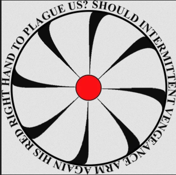

______________________________________________________________________________________________________
L'insurrection
alias :
Les MadMans
Devise :
Créer de la Logique
a partir d'Illogique
Devise :
L'intermitant de la
vengance devrait
il réarmer sa Main Droite Rouge pour nous arreter ?
statut :
Group d'interet ennemi
L'Insurrection est un groupe d'attaque gorilla sans préparation ou coordination.
Leur atout majeur est leur imprévisibilité, leur absence d'objectif clair et
leur capacité a utiliser la force sans retenue pour arriver a leurs buts, aussi obscures soient-ils.
Le dirigeant de l'Insurrection, un homme dont l'une des deux seule chose connue de lui est son surnom, "L'Ingénieur",
et le fait qu'il n'est lui même que le pantin de quelque chose de plus grand.
la Hierarchie du groupe est connue :
le personnel de classe Alpha, qui comporte les plus hauts placés, tel que l'Ingenieur, le Commandant, ou les 11 DELCOM.
le personnel de classe Beta, qui comporte les chefs de Sites,